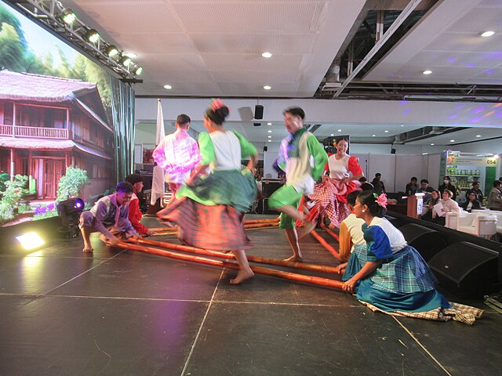
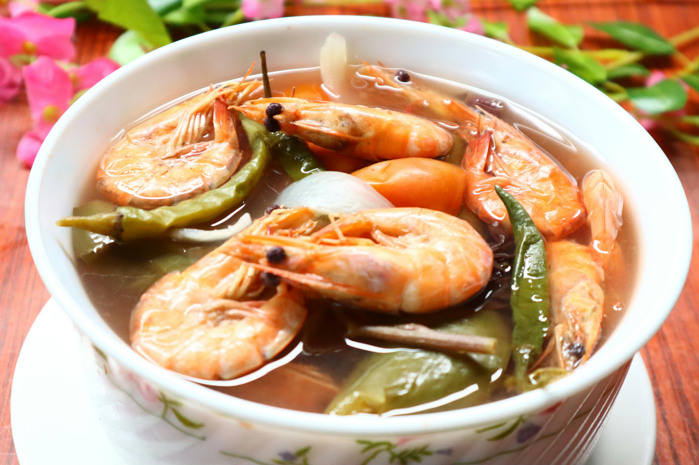
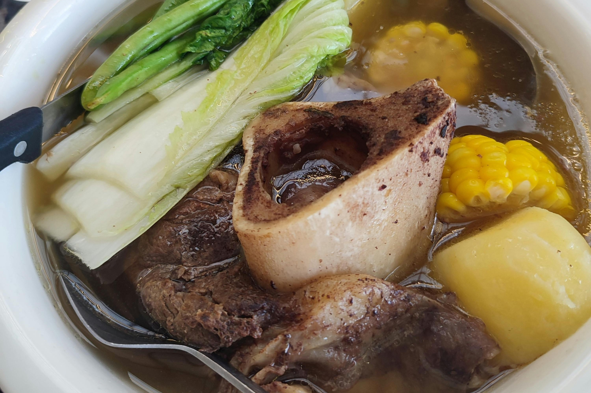

Discover Philippines
Discover PhilippinesPopular Destinations


Culture & History

Vibrant Festivals
From Sinulog to Ati-Atihan, streets erupt with color, dance, and devotion—each festival telling a unique regional story.
View more

Graceful Dances
From Tinikling to Cariñosa, Filipino dances showcase rhythm, grace, and cultural unity—each movement reflecting centuries of tradition and joy.
View moreFood & Delicacies

Adobo
Soy, vinegar, garlic—comfort in a pot.

View Details
Sinigang
Tamarind-soured broth that warms the soul.

View Details
Bulalo
Savory Filipino beef marrow soup with vegetables.

Sisig
Crispy, sizzling Filipino pork dish with tangy, spicy flavor.